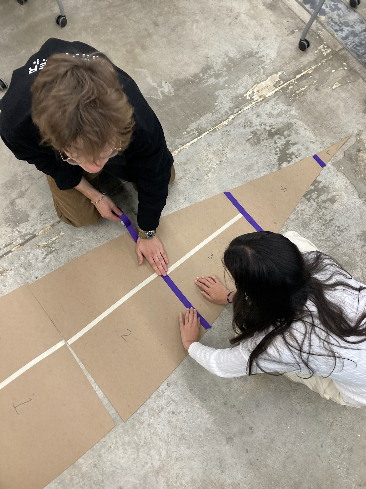
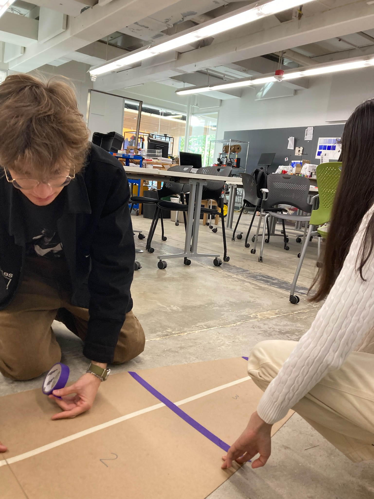
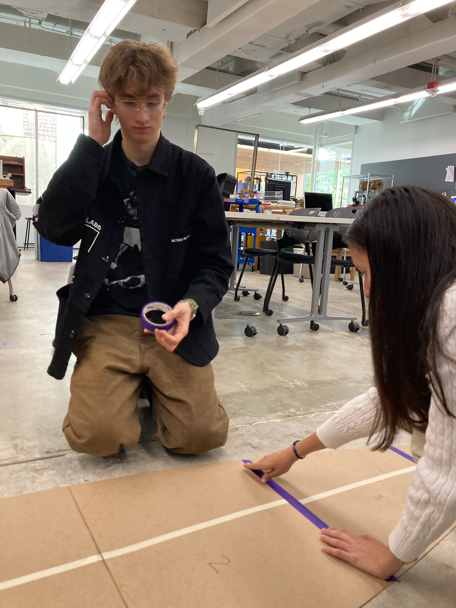
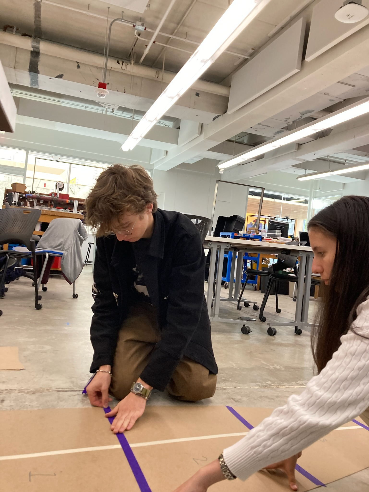

### Week 3: Design and Laser Cutting
Learn to use the laser cutter. Demonstrate basic 2D CAD functions.
#### Team speed docs
Using the Rhino CAD provided by Nathan we constrained our boat to minimize its area and maximize its speed. We made it as sharp and thin as possible while accounting for operator size. After pushing the CAD to its thinest limits we moved over to the laser cutter to cut out our boat's profile from cardboard.
Assignment: Cut and assemble patterns for your boat. Document your work on your team’s website. Reading: The Craftsman, Part 1.1 (pp. 1-80).



